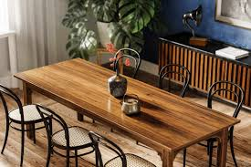

Modern Table

Modern tables are functional, stylish furniture pieces characterized by clean lines,
minimalist aesthetics, and innovative materials—such as glass, metal,
and marble—produced from the late 19th century to the present.
They prioritize simplicity and versatility, often featuring geometric shapes like round,
rectangular, or oval tops designed to suit contemporary living spaces, including dining rooms,
kitchens, and offices.